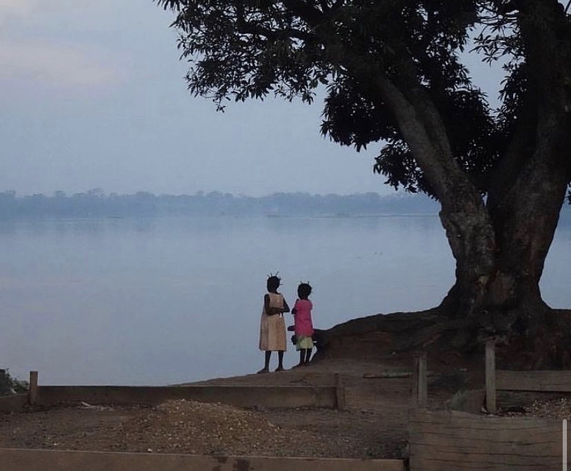

She left without warning, the way twilight suddenly plunges into night. Except she did not plunge, she slipped,
almost as if she had wanted to go. Gentle ripples. Frothy bubbles. And there was nothing left afterwards.
Nothing except the hypnotic chants that smelt of garlic and pepper as Papa whispered novenas under his breath after supper.
Nothing except the unsettling hum of the river flowing by, that resonated through the broken windows covered by empty plastic sugar packets.
Nothing except a loud quiet in which time lost its meaning, the way December melts into one week and January stretches into nine.
We have never gone to the river since then. Papa has forbidden us - With threats of whips from the leather belt that hangs next to the kerosene lamp -
With Promises of future ice cream and cotton candy from the market fair - but most of all - With pleas hidden behind a quivering voice and teary eyes.
Today is different. The river is not quietly humming. She sings and calls. “Zabe”, she says, the way Mama used to shorten Elizabeth, my name.
I shake Chipo until she wakes, and together we tiptoe past Papa’s snores to the river.
When she calls again, I walk into the cold water, listening but not hearing Chipo screaming and Papa howling. I don’t plunge, I slip. Gentle ripples.
Frothy bubbles. And nothing afterwards. Nothing except Mama’s hand pulling me to the bottom.